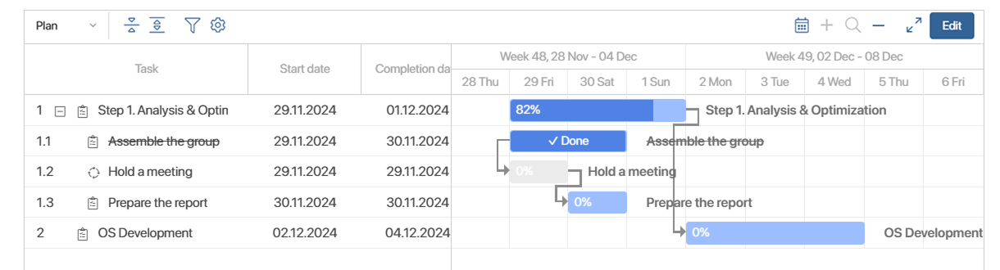

The project plan is shown on a project’s page on the Project Schedule tab and it consists of tasks of different types. They are placed in a certain order and has assigned executors and deadlines.
On the left side of the project plan, you can see a list of tasks, along with their start and completion dates. Pull the table border to the right to additionally display the duration of tasks in days, their completion percentage and the executor.
On the right, each task is represented by a colored bar. The color depends on the task’s type, deadline, and also progress percentage. When a task is completed, it is crossed out, the Done indicator is shown on its bar, and the bar color changes to a darker shade.
The time interval on the visible part of the plan corresponds to the current date. If this date is outside the project timeline (before or after), you will see the start of the project or the completion period, respectively.
Under the plan, you can see the project name, the current plan version number, the date the plan was created, and its status.

The system administrator can:
- Enable task indexing in the list taking into account tasks’ nesting.
- Display the task participants in an additional column of the plan.
- Change the design color for each type of tasks.
- Configure plan editing on the page tab itself or in a separate window.
To monitor the progress of multiple projects, you can customize the display of their plans along a single time axis on the app page. Read more in the View project group plans article.
Toolbar for viewing the plan
You can use the controls that are placed above the plan.
Select what task dates to show: Plan, Estimation, or Actual.
Collapse or expand all subtasks in the task list.
 Open the search bar to set parameters and sort plan items on the diagram by them, considering their nesting. The system administrator can define fields for sorting.
Open the search bar to set parameters and sort plan items on the diagram by them, considering their nesting. The system administrator can define fields for sorting.
Open the options menu to display additional data:
- Show project start and end dates. Indicate the beginning and end of the project.
- Show current date. Indicate the current date.
- Hide non-working days. Hide non-working days. This option is available if the Use the business calendar option is enabled in the project.
- Show overdue tasks. Highlight overdue tasks.
- Show the critical path. Highlight on the chart in red color the tasks that are completed on the project end date or later, as well as all related tasks.
- Hide executed. Hide completed tasks. In this case, the executed parent task with the Task type will be displayed if it has unfinished subtasks.
Navigate to the current date.
Increase or decrease the time period. The plan can be broken down into the following time periods: day, week, month, quarter, or year.
This option allows you to display the plan in full-screen mode. The action is available if the administrator has enabled the button display in the widget settings.
Edit. This action is available if you have the permissions to edit the plan. It allows you to go to plan editing page.
Steps for working with a project plan
Preparing the project plan and working with it during project implementation consists of the following steps:
- Add tasks to the chart, defining their types.
- Link the plan tasks to set up the order of their execution.
- Save the plan as Draft.
- If you are using a project template, check the deadlines and executors of the tasks, since they are copied from the template. Make changes if necessary.
- If plan approval is set up for the project, send the finished draft for approval.
- Publish the project plan. The assignments of Task and Milestone types will be assigned to users.
- Monitor the project plan to check the progress. Request estimated dates of tasks.
- Add new tasks to the plan. You can create new versions of the plan and compare them with the old ones.
- When the project is finished, archive it. Please note that you can always restore an archived project and resume working on it.
Project plan statuses
The following statuses are available for a project plan:
- Draft. A new or edited version of the plan that has been saved but hasn’t been approved or published. This status is also assigned to projects restored from the archive. There can be several drafts of a plan at the same time.
- Pending approval. A version of the plan sent for approval and not yet approved.
- Approved. An approved version of the plan that hasn’t been published.
On the plan chart, you can see the name of the approver next to the Pending approval and Approved statuses.
- Current. The published version of the plan. Only one version can be current.
- Archived. The current version is assigned this status when another version is published or when the project is archived.
These are the default statuses. They cannot be deleted, and their codes cannot be changed. However, the administrator can add additional statuses.
The statuses of all the versions of the plan are displayed on the project page, in the About the Project widget. It shows:
- Current Plan.
- Drafts. All versions assigned the Draft, Pending approval, and Approved statuses.
- Archive. All plan versions that have ever been created for the project.
Found a typo? Select it and press Ctrl+Enter to send us feedback